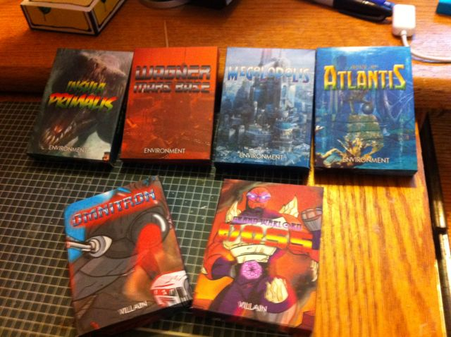
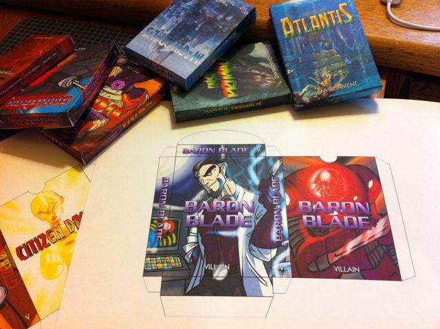
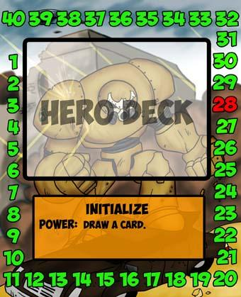

28 posts · 2800 views · started 2011-11-08 04:19 UTC
SP
Spiff
2011-11-08 04:19 UTC
#1
Check out the super cool card boxes I made to hold my Environment and Villain decks. Boy, you can do anything with Photoshop and a color printer… and in this case also some card stock to put into the printer. The boxes are sized small to hold the 15- and 25-card decks. The card stock you can buy that will go through a home printer isn’t very thick, so they aren’t as sturdy as other card boxes (for example, the boxes that my pre-made M:tG decks came in), so I won’t be stacking lots of stuff on top of them. But standing on their sides or ends, they seem to be a sturdy enough way to store the individual decks.
I haven’t made any for the hero decks, and I don’t think I will until more hero art is available. All I have right now is the front and backs of the hero cards, and I don’t really want to have the back of the box showing the hero after he/she got their butts kicked. I’m hoping that the SotM guys can be talked into releasing the art they’ll be using for the health counters, and I can use that for the back of the boxes.
In fact, this kind of thing (templates people can download to print out and make their own card storage solution) is exactly the kind of thing that would be a great addition to the site’s Downloads page, don’t you think… ?


SY
Sysiler
2011-11-08 09:39 UTC
#2
wow looks nice! I need to make my self some.
TC
The_Conscience
2011-11-08 13:30 UTC
#3
Query: Is there a place that one can get these files so they can be printed out in the fashion that you describe?
Just print them out and cut around the outside of the template. Be sure to also make the four little cuts you’ll need to separate the little white flaps from the top and bottom of the box so that the flaps can fold down properly (it’s easy to see what I’m talking about when you see the template).
Fold at each of the edges. I used a ruler to make sure my folds were straight and crisp. Then I used a glue stick to glue the side and bottom flaps down, but I also put some tape on the outside because I didn’t trust the glue to hold forever. That seems to have been a winning combination.
TH
TheJayMann
2011-11-08 15:33 UTC
#5
Some form of superglue could likely be trusted to hold forever (it’s what I used for mine).
CA
Carlosdosbrickos
2011-11-08 20:52 UTC
#6
These are great! Would you mind if I reposted them on the BGG site? These are much nicer than the existing tuckboxes there.
SP
Spiff
2011-11-08 21:20 UTC
#7
Fine with me, although I should point out that the Environment decks use art that I swiped from the Internet (for example, the dinosaur pic on Insula Primalis is from the Turok video game). So they’re not all SotM art.
If the SotM guys would like to send me some custom art for the environments, I’d be happy to update them…
BE
beevolant
2011-11-09 00:17 UTC
#8
Very cool!
VE
Veet
2011-11-09 16:53 UTC
#9
These are great and exactly what I was looking to make, thanks.
EV
EvilWayne
2011-11-27 00:08 UTC
#10
Hey, I actually made several tuck boxes a while ago.
My Omintron box looks a bit like yours: Villain Tuck Boxes
I have made one for most of the heroes (they’re in the same set of photos).
I haven’t made one for Tachyon mostly because I wanted to keep with the same motif as the others and her image doesn’t really wrap very well (although I haven’t worked on it for some time now).
I also made my own hp counters. It was really tough trying to use the small cards they had; too busy to see the numbers well.
I’ve been meaning to post this since last month.
-w
FO
foxtrot2620
2011-11-27 23:33 UTC
#11
These are amazing! Would it be possible to get a hold of these files for printing? I’m especially interested in those health trackers.
EV
EvilWayne
2011-11-29 13:02 UTC
#12
Thanks! I sure can (I’m assuming that it’s okay to use the artwork like this).
Gimme a day or so to make cull the material together, most of it is still scattered around my hard drive.
-w
WR
WriterRyan
2011-11-29 14:24 UTC
#13
I’m no hero lawyer… never was. I’m just an old killer friend hired to do some wet work forum modding.
In any event, as long as you’re not selling 'em, I’d think it would fall under fair use.
SP
Spiff
2012-01-15 21:21 UTC
#14
Did EvilWayne ever post a link to the files he used for his health trackers? I can’t find it on the forums here and can’t remember if that ever happened. If he did, could someone point me at the link?
I got my nephew SotM for Christmas and it was a big hit. When he was visiting for X-mas, he played with my set which includes all the oversized health trackers and cards, and would like to print out versions of mine to use except that they’re pretty big and would take up a lot of space, which is at a premium for a college kid living in a dorm (apparently the game is a big hit with everyone in the dorm too). I think EvilWayne’s health trackers would be just the thing my nephew needs, if I can get my hands on the template.
FO
foxtrot2620
2012-01-16 00:56 UTC
#15
Nope, he never posted them. I would also like to get my hands on those health trackers
EV
EvilWayne
2012-01-16 00:59 UTC
#16
Bizarre.
I haven’t been here since I said it would take me a couple of days. And by days, I of course meant months.
But I was reorganizing some games this weekend (actually sleeving all of Dominion) and I came across SotM and remembered that I had promised to add the template. So I thought I would check in and see if they were still being looked for. How odd that you actually posted this today.
I think I was hoping to rework them before posting. I wanted to make them a little smaller so they would fit neatly in the same size tuckbox as the cards themselves. But if I wait for that, then it’ll be Christmas.
Okay, I will dig it all up tonight and have a PDF ready.
Unless you’d like it some other way? They’re native Corel Draw 11 files, but I can spit them out just about any other way.
SP
Spiff
2012-01-16 01:27 UTC
#17
I’ve got Illustrator CS4, so I should be able to handle whatever you throw at me. If it helps speed things up, I can add my own art. It’s the template outlines that I’m most interested in. I’m assuming you did some amount of work to make sure that the numbers lined up properly to show through the holes and I’d like to avoid having to duplicate that if possible.
RA
Rabit
2012-01-16 03:23 UTC
#18
For those of us interested but without Illustrator, PDFs are wonderful.
Many thanks, folks!
Rabit
EV
EvilWayne
2012-01-16 19:29 UTC
#19
Okay, I’ve put a couple of file up. Neither is particularly small.
I’ll probably move the PDF to BBG when I get a chance, but I didn’t want to wait another couple of months to post.
This contains the following hit point counters:
-A blank one
-Two generic SotM counters (good for keeping track of villains)
-Fanatic
-Bunker
-Visionary
I will see about working on one for each of the other heroes as well.
And for Spiff (and anyone else who wants it) there is a 300 dpi EPS file of the blank template: HP Tracker Base EPS (8.5 MB)
This should open in any illustration software that exists (but YMMV).
Hope you dig it!
SP
Spiff
2012-01-16 20:08 UTC
#20
Perfecto. Thanks!
FO
foxtrot2620
2012-01-16 22:55 UTC
#21
Awesome!! Thanks!!
RA
Rabit
2012-01-17 00:42 UTC
#22
:o
By the Legacy Ring, EvilWayne! That’s great. Many thanks for for the time on the instructions and all - greatly appreciate it!
Rabit
SP
Spiff
2012-01-17 04:52 UTC
#23
I’m digging it. I took EvilWayne’s awesome trackers and added info like the hero’s hp total, their on-card power, and on the back, their three incapacitated powers. Now, you can use these on the table in front of you instead of needing the hero’s actual card. Thanks EvilWayne!
Bwah! That’s… :o wow. I so wish I had the time and inclination to do this. Any chance you will be able to post the other heroes?
Many thanks to both of you!
Rabit
SP
Spiff
2012-01-18 05:09 UTC
#25
What I’d like to do is to put together a “The Missing Pieces” post and link to a full set of EvilWayne’s hp trackers, oversized villain cards, and a full set of custom card boxes – everything you need to compliment the cards that came in the box. I haven’t made the rest of the hp trackers yet though, and I’ve only got boxes for the villains and environments, so that post may take a while to cobble together.
MA
mahipps
2012-01-18 16:37 UTC
#26
Another option for HP Trackers for anybody interested. I made one of these for each character and use some simple colored wood blocks to walk around the card as HPs are lost/gained.
I’m happy to share if anyone wants them.

EV
EvilWayne
2012-01-19 03:58 UTC
#27
Thanks man!
My inner typesetting-nerd loves to do those things.
If you noticed, the instructions aren’t exactly the same design as the counters. That body design is from a second attempt to make the counters small enough to fit into the same sized tuckboxes as the cards.I have a set almost ready of those, but I haven’t constructed them, so I’m holding off posting it (probably the weekend) in case they don’t actually work.
Working on a 3-wheeled set as well, to track the up-and-down modifiers as well as hit points on the same unit.
That’s proving a bit awkward. So far, I can’t come up with a design that doesn’t just look dumb.
EV
EvilWayne
2012-01-19 04:13 UTC
#28
Man, that is pretty sweet. I love the idea of just flipping it over when you’re dead.